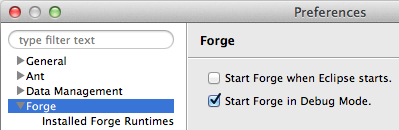
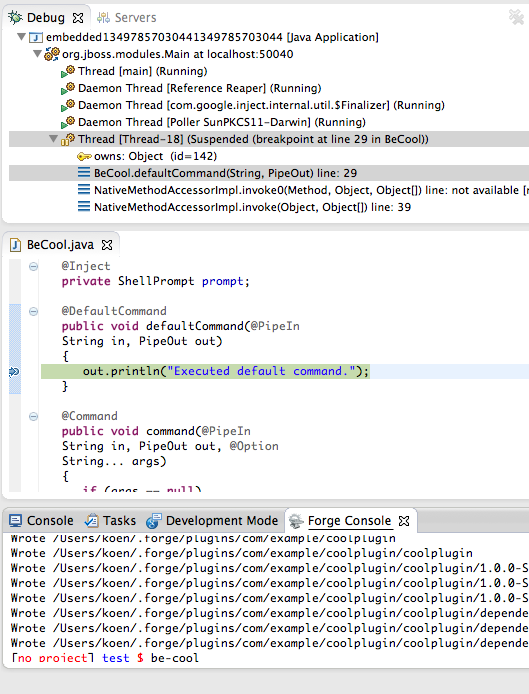
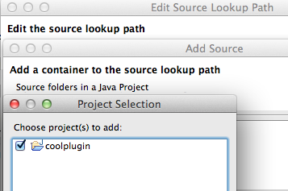

|
A new toggle allows the users to start Forge in debug mode.

This feature is especially useful for developers that are working on new Forge plugin projects.
Now it is possible to install and execute these plugins and debug them from within JBoss Tools.

A number of improvements for this feature is already on the wishlist though.
Currently the source lookup path has to be respecified at every Forge startup. As shown below, this
is usually only a matter of adding the projects in the current workspace.

An obvious improvement would consequently be to save this source lookup path between Forge launches.
Another improvements would be hot code replacement to make the turnaround time shorter.
|